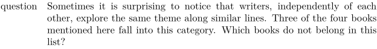
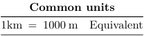

Contents
Summary
The environment \starttabulate ... \stoptabulate is used for tabular material
Settings
| \starttabulate[|...|][...=...,...] ... \stoptabulate | |
| [|...|] | template |
| ...=...,... | inherits from \setuptabulate |
Description
Tabulate is a table-like environment to place information in rows and columns without placing vertical rules. There is an option to place horizontal rules with the command \HL. The tabulate environment knows left, right and center aligned columns for single line entries. For multiple line entries there is the p (paragraph) type column.
Keys
General keys:
| Key | Meaning |
|---|---|
| [vertical bar] | column separator |
| c | center |
| l | flush left |
| r | flush right |
| p | paragraph |
Spacing keys:
| Key | Meaning |
|---|---|
| i<n> | set space left |
| j<n> | set space right |
| k<n> | set space around |
The <n> multiplies the amount of space as setup in \setuptabulate; the default is 0.5em. To achieve a non-integer multiple of the default, enclose the multiple in brace (for example, j{0.25}).
The width of a column can be set:
| Key | Meaning |
|---|---|
| w(d) | set column width at specified value, single line |
| p(d) | set column width at specified value, paragraph |
| p | use maximum column width for the paragraph |
Font switches which apply for a whole column, they can be set in the preamble:
| Key | Meaning |
|---|---|
| B | bold |
| I | italic |
| R | roman |
| S | slanted |
| T | teletype |
| m | inline math |
| M | display math |
Available hooks in the preamble:
| Key | Meaning |
|---|---|
f\command |
arbitrary fontswitch, defined by \command
|
| b{ .. } | contents between curley braces is placed before the entry |
| a{ .. } | contents between curley braces is placed after the entry |
| A{ key } | contents is aligned according to key (example: A{stretch}) |
h\command |
arbitrary command or macro, defined by \command
|
Switching columns and rows:
| Command | Meaning | Description |
|---|---|---|
| \NR | next row | make a new row |
| \NC | next column | go to next column |
| \NS[n][l,c,r] | create a span | n telling how many colums to add, l,c,r indicating the type of span |
| \EQ | next column with column-separator | go to next column |
| \HL | horizontal line | draw a horizontal |
| \VL | vertical line | draw a vertical line |
Examples
Simple example
-
\starttabulate[|l|p|] \NC question \NC Sometimes it is surprising to notice that writers, independently of each other, explore the same theme along similar lines. Three of the four books mentioned here fall into this category. Which books do not belong in this list? \NC \NR \stoptabulate
- 
More complicated formatting
-
\starttabulate[|b{- }la{.}|l|l|] \NC A \NC This Perfect Day \NC Ira Levin \NC \NR \NC B \NC Opstaan op Zaterdag \NC Jan Gerhart Toonder \NC \NR \NC C \NC Tot waar zal ik je brengen \NC Anton Koolhaas \NC \NR \NC D \NC The City And The Stars \NC Arthur Clarke \NC \NR \stoptabulate
-

Using \NS ans \EQ
-
\setuptabulate [EQ={=}] \starttabulate[|l|l|l|] \NS[2][c] \bf Common units \NC\NR \HL \NC 1\unit{kilo meter} \EQ 1000 \unit{meter} \NC Equivalent \NC\NR \HL \stoptabulate
- 